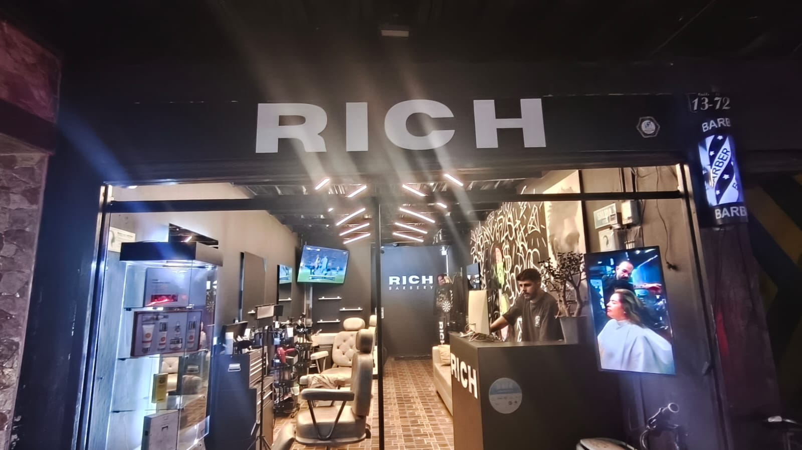
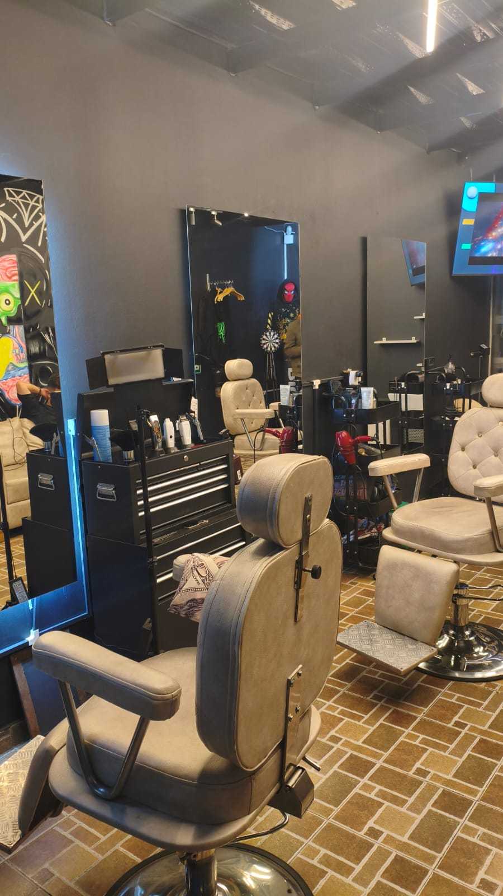
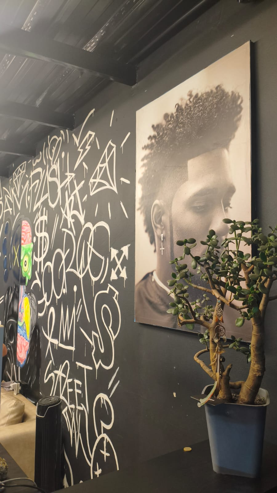
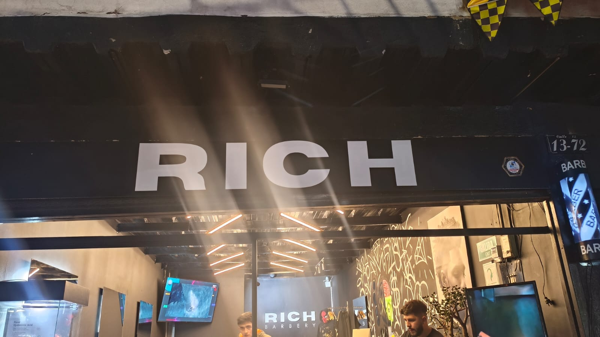

Barbería · Funza
Luce siempre a tu mejor estilo
Precisión, calma y un acabado que se nota. Un espacio para verse bien, sin prisa y sin ruido.
01 — Nosotros
Una barbería con identidad propia.
Rich Barbery está en Funza, en la calle 13. El local se reconoce por su aviso, los sillones y el mural de la pared.
Un buen corte se siente antes de verse.
Horario
- Lun – Vie9:00 am – 5:00 pm
- Sáb12:00 pm – 9:00 pm
- Dom11:00 am – 7:00 pm


02 — Galería
Mira el local.

03 — Visítanos
Estamos en Funza.
Horario por confirmar
Calle 13 #13-72, Funza, CundinamarcaHorario
- Lun – Vie9:00 am – 5:00 pm
- Sáb12:00 pm – 9:00 pm
- Dom11:00 am – 7:00 pm
El mapa aparece al llegar a esta sección. Si prefieres, usa Cómo llegar.